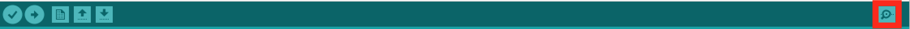

Connecting the ESP8266 to a WiFi network
Lab Objectives
This Lab will show you how to connection your ESP8266 to a local WiFi network. This Lab will also introduce the Serial Monitor, which allows you to see output from a running application. By the end of this lab you should:
- Be able to add a WiFi connection to a sketch
- Be able to add a Serial connection and generate output to the serial connection.
- Understand the function calls needed to start up the WiFi and Serial connections then how to use the connections and where to find documentation about the functions available.
Introduction
In the First App practical you verified you had a working development environment and uploaded your first application to the ESP8266. Now we will start exploring some of the more advanced functionality of the ESP8266, starting with the on board WiFi interface.
The ESP8266 has a built in WiFi interface that supports 802.11 b/g/n 2.4 GHz networking. 5GHz frequencies are not supported. The ESP8266 can be setup to be an access point or to join an existing Wireless LAN. We are going to join a LAN in the workshop.
Step 1 - Load an example sketch
In the Arduino IDE, load the WiFiScan example sketch, using File -> Examples -> ESP8266WiFi -> WiFiScan then upload the sketch to your ESP8266. This sketch will scan for local WiFi networks and display the results.
Step 2 - Run the sketch and monitor output

To display the results, the sketch is using the Serial interface on the ESP8266 to send output to. This output will be sent back into the USB port on your laptop/workstation. To see the output you need to open up the Serial Monitor, which is the magnifying glass icon at the top right of the IDE. You must ensure that the baud rate set in the serial monitor matches the speed of the Serial.begin(115200); statement in the setup function in the sketch.
Every 5 seconds you will see the board scan for available networks then output what it finds to the serial port.
Step 3 - Access the documentation for the enhanced ESP8266 library
You can get documentation about using ESP8266 in Arduino and the libraries that are installed with the ESP8266 plugin from here. If you finish this assignment early modify the sketch to show the channel number each network is using and the encryption type in addition to the SSID and RSSI(signal strength).
Step 4 - How to connect to a WiFi network
The example sketch WiFiClient shows how to connect to a WiFi network, providing a SSID and password, which we will use in part 2 of the workshop. Load the sketch (File -> Examples -> ESP8266WiFi -> WiFiClient) and examine the code, take note of how the WiFi network credentials are entered to join a network.
Note: you don't need to run this example and apply for the sparkfun credentials, simply walk through the code and see how the connection to the WiFi is created.
Step 5 - Understanding the pattern of using the ESP8266 Library
Now you have seen 2 different example sketches using both Serial and WiFi connections. You may begin to see a pattern on how to use the resources:
- Optionally include the required header, such as
#include "ESP8266WiFi.h" - In the setup() function initialise the library, usually with a begin() call and/or setting parameters
- In the loop() function access features of the library
Note: *If you finish early jump back to step 3 to add the additional functionality